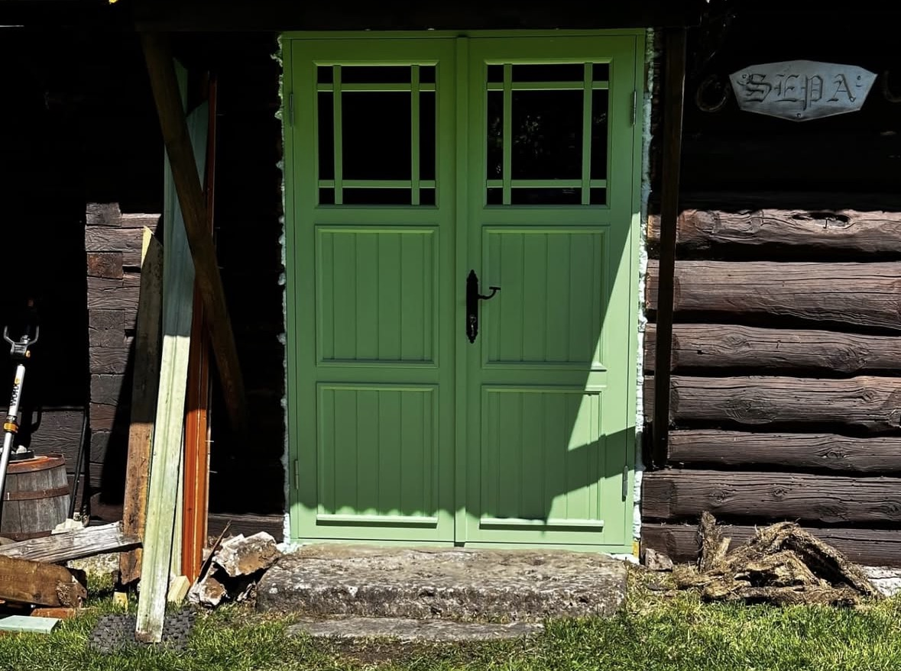
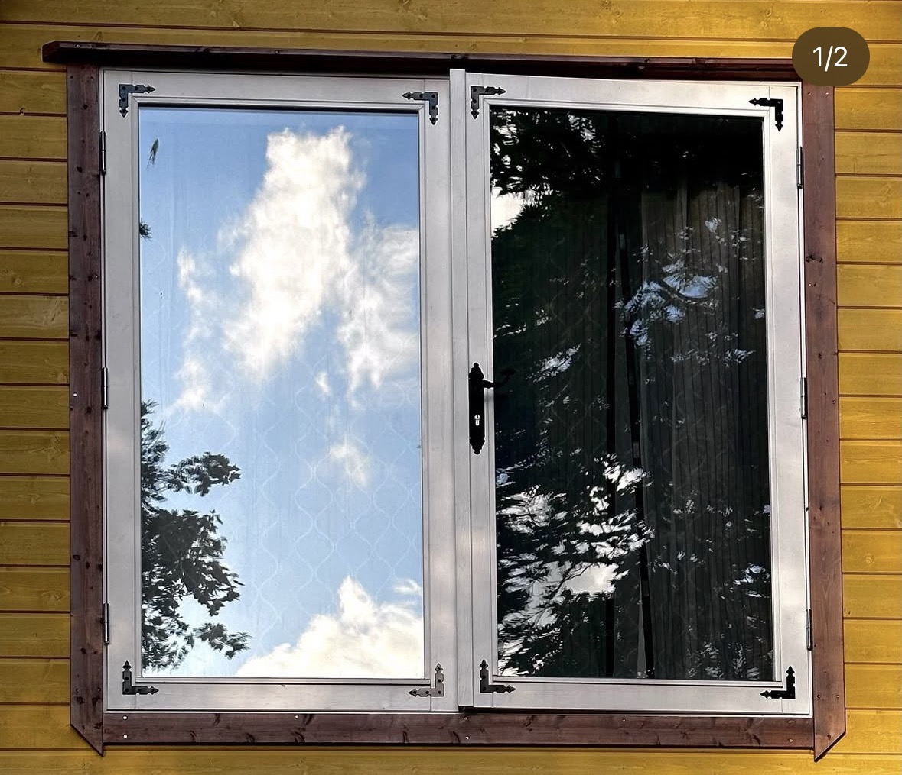

Tehtud tööd
Siin galeriis saad vaadata meie valminud puittooteid alagruppides. Kui soovid sarnast lahendust, võta ühendust ja valmistame just sinu soovidele vastava töö.
Uksed





Trepid


Aknad




Terrassid ja rõdupiirded


Väravad


Muud eritellimustööd